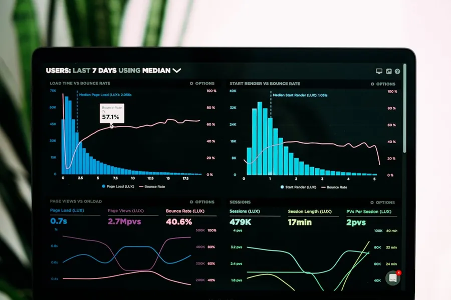

Intellectual Capital for the Modern Risk Officer
In-depth perspectives, actuarial research papers, and strategic guidance authored by STACKLY's senior enterprise advisory partners.
The 2026 Global Enterprise Risk Landscape: Navigating Geopolitical Fracture & Algorithmic Shift
A 42-page forensic study examining the compound interactions between cross-border currency controls, AI model liability, and physical supply chain bottlenecks across G20 economies.
Download Full Executive Briefing arrow_forwardEnterprise Risk Perspectives
Modernizing the Audit Committee Charter for Extreme Shocks
Why annual heat maps fail in volatile quarters and how continuous actuarial thresholds reshape governance oversight.
Read Article arrow_forwardQuantifying Intangible Brand Value During Material Crises
A structured methodology for assessing reputational contagion across institutional shareholder portfolios.
Read Article arrow_forward
Bridging Risk Taxonomy Between Operational Units & the Board
Eliminating dialect misalignment so operational hazards are translated directly into financial loss probability.
Read Article arrow_forwardCyber Risk & Threat Intelligence
Zero-Trust Microsegmentation: Beyond the Marketing Buzzwords
Architectural requirements for insulating core ERP ledgers from compromised edge development clusters.
Read Article arrow_forward
Ransomware Playbooks: Deciding When to Escalate to General Counsel
Clear decision trees for navigating sanctions liabilities during complex nation-state cyber extortion demands.
Read Article arrow_forwardAuditing Software Dependencies in Continuous Deployment Pipelines
How to systematically isolate upstream open-source package compromise before code hits production clouds.
Read Article arrow_forwardFinancial Exposure & Liquidity
Stress Testing Corporate Commercial Paper in High-Rate Regimes
How treasury teams calculate 90-day liquidity survival horizons when secondary short-term debt markets seize.
Read Article arrow_forward
Dynamic Foreign Exchange Corridors for Tier-1 Importers
Replacing rigid forward contracts with algorithmic collar strategies during unexpected sovereign policy pivots.
Read Article arrow_forwardCounterparty Solvency Scoring Under Basel IV Frameworks
Standardized evaluation techniques for assessing banking partner systemic risks and deposit concentration safety.
Read Article arrow_forwardCompliance & Governance Insights
The Operational Burden of the EU Artificial Intelligence Act
Actionable readiness steps for multinational enterprises deploying machine learning in credit and hiring systems.
Read Article arrow_forwardStandardizing SEC Material Cyber Event Disclosures
How legal and engineering teams determine the precise 4-day materiality trigger threshold under Item 1.05.
Read Article arrow_forward
ESG Supply Chain Traceability & Cross-Border Customs Penalties
Mitigating import detention risks through third-party labor and environmental certification validation.
Read Article arrow_forwardBusiness Continuity In Action

Dual-Sourced Operational Hubs: Calculating Real Redundancy
Why having two distribution centers in the same power grid fails disaster recovery audits and how to separate nodes.
Read Article arrow_forwardValidating Immutable Backups Against Delayed Encryption Threats
Best practices for air-gapped tape and cloud write-once storage to survive sophisticated sleeper ransom malware.
Read Article arrow_forward
Executive Crisis Communication Protocols During Black Swan Events
Ensuring unhackable satellite and alternate messenger chains remain operational when primary office networks crash.
Read Article arrow_forwardRisk Technology & Modeling
Predictive Neural Networks for Early-Warning Liquidity Cascades
How machine learning algorithms detect micro-movements across banking counterparties before public downgrades.
Read Article arrow_forwardThe Death of the Annual Audit: Transitioning to Continuous Telemetry
Architecting real-time risk data pipelines directly from core cloud providers into executive boardrooms.
Read Article arrow_forward
Monte Carlo Stress Testing at Enterprise Scale
Running tens of thousands of simultaneous variance scenarios on enterprise balance sheets without latency.
Read Article arrow_forward